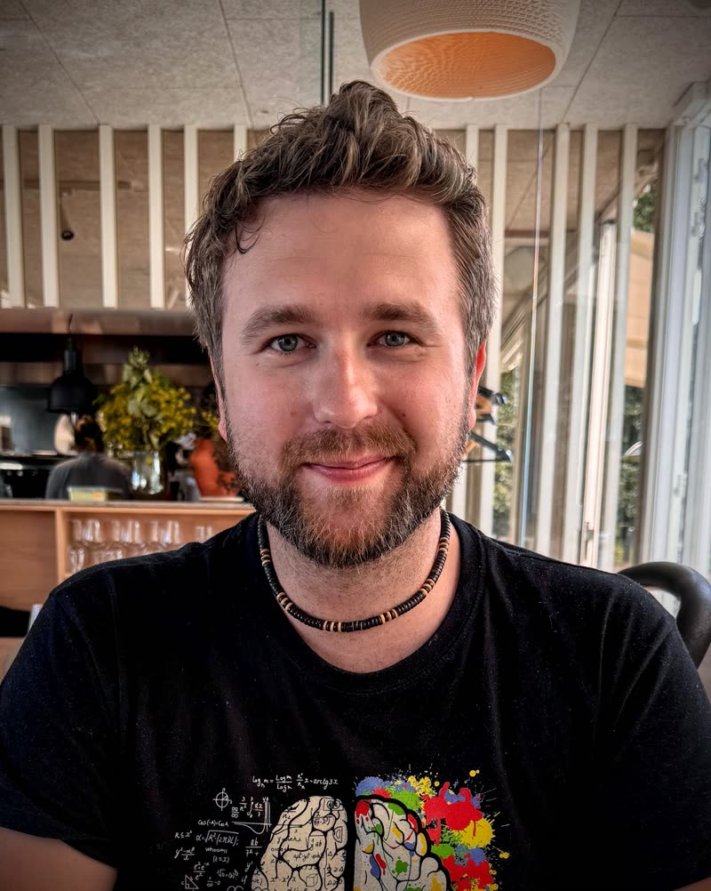

JANI ORBINSKI
Sound Designer & Composer
Narrative audio | Performance | Storytelling
Portfolio website
Ihmisiksi töissä
Podcast · Producer
Aukeema – Q-teatteri
28.11.–17.12.2026 · Sound design
Meidän Syyriamme
Yle Areena · Direction, script, sound design
LinkedIn
YouTube
CV
Email
Save contact
janiorbinski.com